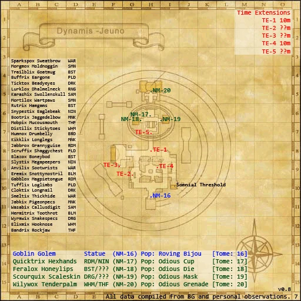

Description
Dynamis - Jeuno is a Dynamis area in Dynamis.
Map

Notorious Monsters

Regular Monsters

References
External references describe their own server or retail rules. Documented Zenith changes take precedence.
Map credits: Map 1 — HorizonXI Wiki. Original game maps © SQUARE ENIX; redrawn maps retain the credited authorship and license.

Additional level-75 reference
Goblin NMs in Dynamis have an additional TP attack:
- Goblin Dice: AoE random effect (Sleepga, Slowga, Dispelga, Disease-ga, Poisonga, damage, drop TP to 0, Benediction, recharge players' abilities)
Game Script
 Image source
Image source
Ru'Lude Gardens
Yow Rabntah: Dialog Table Entry 02409 Humes and Galka have never been the best of friends. I used to think that was just the way it was, and always would be. I figured I'd be causing myself grrrief if I stuck my whiskers into other nations' problems. My next catnap was all that mattered to me in those days. Ignorrrance is bliss, as they say. Responsibility for Raogrimm's trrransformation lies with all of us who traveled with him on that expedition. By sharing the blame for the crimes he committed as the Shadow Lord, we can finally call ourselves his trrrue companions.
Adapted from Eden Wiki: Dynamis - Jeuno · Contributors and history · CC BY-SA 4.0. Revision 8312. Layout, links and optional background text adapted for Zenith.